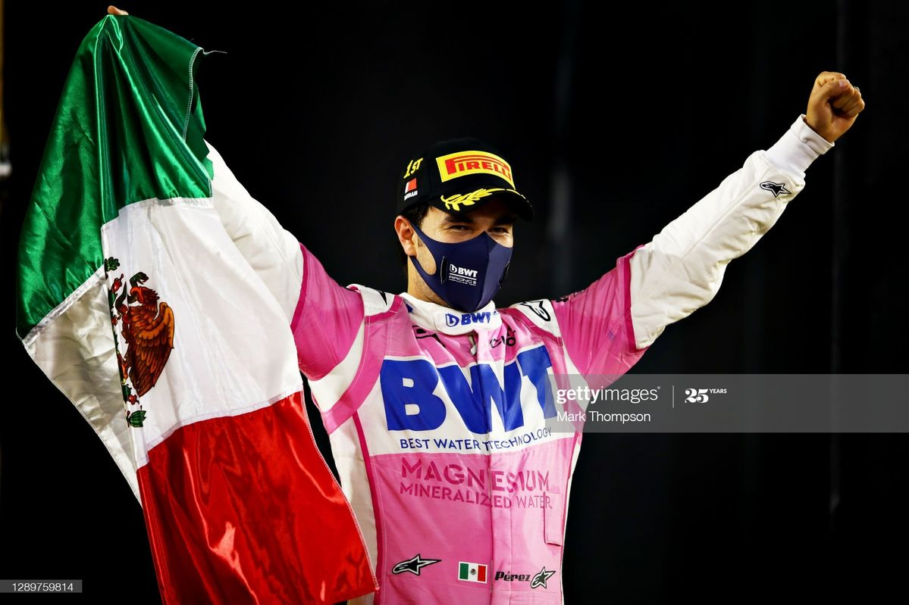

Sergio Pérez
DRIVER PRESENTATION
Sergio Pérez
Análisis Competitivo e Impacto Estratégico de Sergio Pérez en la Fórmula 1
Sergio "Checo" Pérez Rivera inició su carrera en el karting mexicano (1987), desarrollándose como piloto técnico de precisión en categorías inferiores. Su ascenso a la Fórmula 1 en 2011 con Sauber marcó el inicio de una trayectoria caracterizada por habilidades defensivas superiores y gestión táctica bajo presión. Tras su paso por McLaren y Force India (2012-2020), donde acumuló su primera victoria en el Gran Premio de Estambul, Pérez se consolidó como referente de resistencia competitiva. Su incorporación a Red Bull Racing en 2021 le permitió participar como piloto de apoyo estructural durante el duelo entre Verstappen y Hamilton, demostrando madurez estratégica y experiencia de parrilla. Con 25 victorias en su carrera profesional y más de 250 podios potenciales, Pérez representa el paradigma del piloto latinoamericano excepcional en el automovilismo mundial contemporáneo.
MOMENTOS DESTACADOS

Victoria en Sakhir 2020
De último a primero: Checo logra su primera victoria en F1 en una remontada histórica que le valió el asiento en Red Bull.

"Checo is a Legend"
Abu Dhabi 2021: Una defensa magistral ante Hamilton que fue clave para que su compañero lograra el campeonato mundial.

Triunfo en Bakú 2021
Su primera victoria con Red Bull Racing, demostrando su temple en un final de carrera caótico y emocionante.